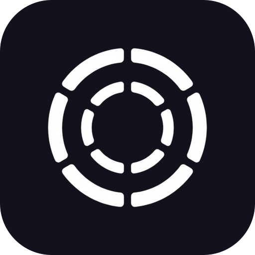

🖥 Real terminals as nodes
Each node runs its own shell (PTY). Drag, resize, pan, and zoom freely.

DisTermMultiple real terminals as draggable nodes on a single pan/zoom canvas — a spatial map instead of a stack of hidden tabs. Built for scattered, ADHD-friendly workflows.
Each node runs its own shell (PTY). Drag, resize, pan, and zoom freely.
tmux keeps terminals — and running processes — alive across restarts.
Each project is its own canvas with its own working directory.
A one-click Claude Code node, plus AI commit messages and terminal names.
Monaco editor and diff viewer right on the canvas, next to your shells.
File-level stage, diff, branch, commit, and push — backed by system git.
Jump to any node, project, or action. Explorer, undo/redo, markdown view.
The same canvas, self-hosted on a Linux host and used from any browser.
Lay your work out in space.